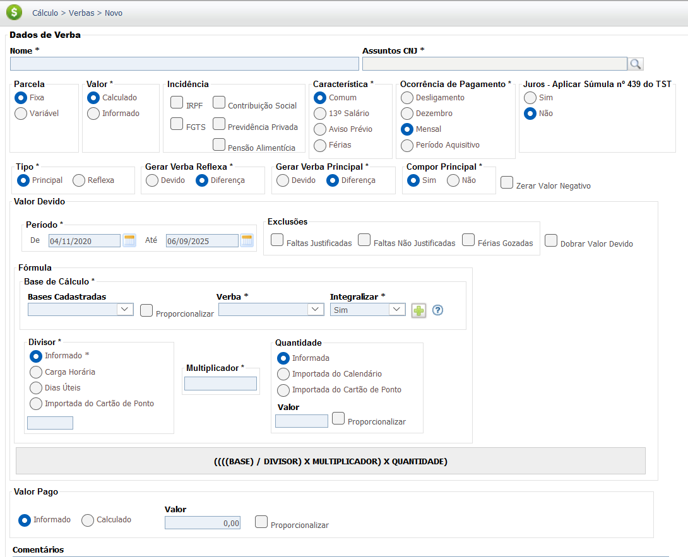
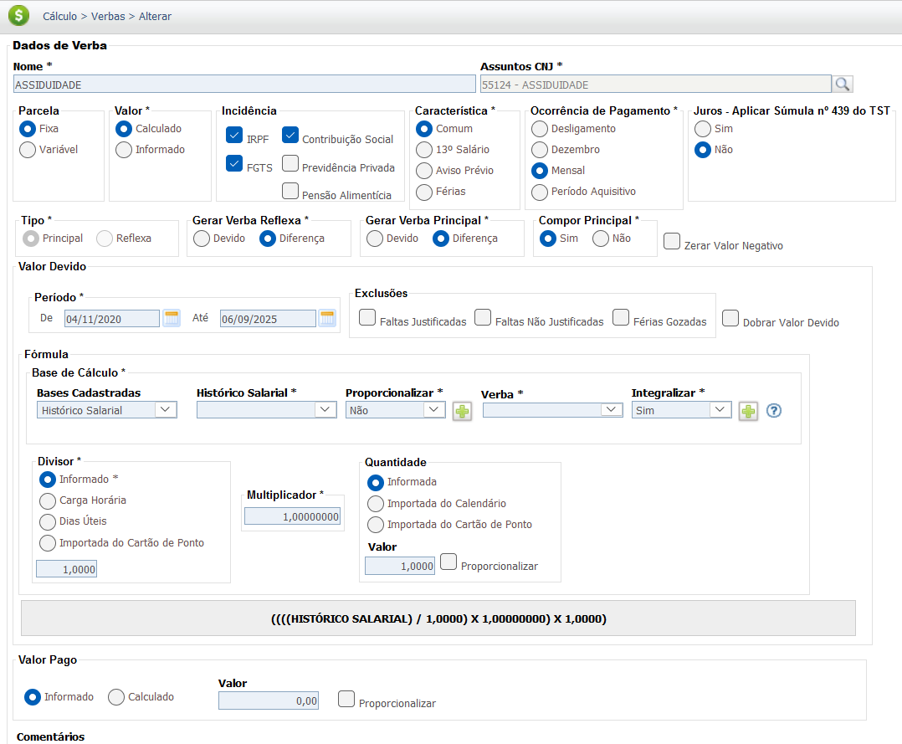
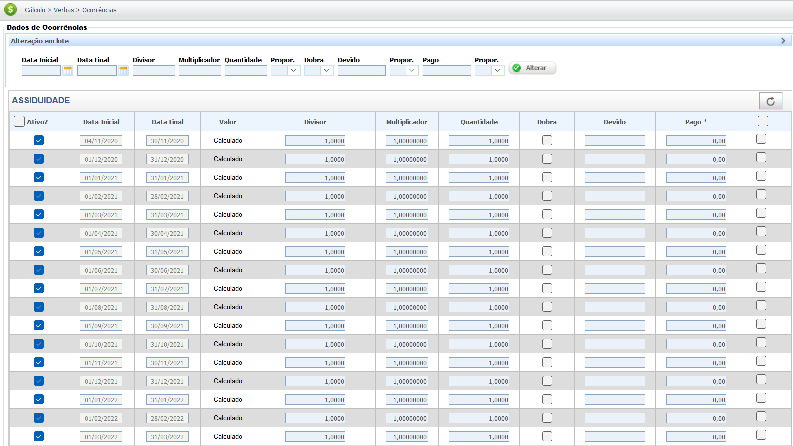

Gratificação por Produtividade
A Gratificação por Produtividade é um adicional salarial concedido ao empregado como reconhecimento e prêmio pelo atingimento de metas, superação de resultados ou melhoria de desempenho individual ou coletivo, conforme critérios pré-estabelecidos. Ela visa estimular e recompensar o desempenho superior do trabalhador.
A Gratificação por Produtividade é tipicamente um direito estabelecido por meio de Convenções Coletivas de Trabalho (CCT), Acordos Coletivos (ACT) ou por Regulamento Interno da Empresa.
A definição de sua natureza jurídica (salarial ou indenizatória) é crucial para a incidência de encargos e para a integração à remuneração para fins de cálculo de outras verbas, sendo este um dos pontos mais afetados pela Reforma Trabalhista de 2017.
Base Legal e Jurisprudência
Base Legal
O direito e os critérios para a Gratificação por Produtividade devem ser verificados na CCT/ACT da
categoria ou no Regulamento da Empresa.
Consolidação das Leis do Trabalho (CLT) - Regras Cruciais:
-
Artigo 457, § 1º (Regra de Integração Salarial - Pré-Reforma):
"Integram o salário, não só a importância fixa estipulada, como também as comissões, percentagens, gratificações ajustadas, diárias para viagens e abonos pagos pelo empregador."
Fundamentação Jurisprudencial (Pré-Reforma): Pelo TST, a regra era: se a gratificação era paga com habitualidade, ela tinha natureza salarial (Princípio da Habitualidade - Art. 457, § 1º, da CLT).
-
Artigo 457, § 2º (Natureza Indenizatória - Pós-Reforma):
"As importâncias, ainda que habituais, pagas a título de ajuda de custo, auxílio-alimentação, vedado seu pagamento em dinheiro, diárias para viagem, prêmios e abonos não integram a remuneração do empregado, não se incorporam ao contrato de trabalho e não constituem base de incidência de qualquer encargo trabalhista e previdenciário."
-
Artigo 457, § 4º (Regra dos Prêmios - Pós-Reforma):
"Consideram-se prêmios as liberalidades concedidas pelo empregador em forma de bens, serviços ou valor em dinheiro a empregado ou a grupo de empregados, em razão de desempenho superior ao ordinariamente esperado no exercício de suas atividades."
Entendimento Jurisprudencial (Natureza Jurídica)
A análise da natureza jurídica (salarial ou indenizatória) da Gratificação por Produtividade é a chave para o cálculo de reflexos e deduções, sendo o marco da Reforma Trabalhista (11/11/2017) fundamental:
-
Período Anterior à Reforma (Até 10/11/2017): Natureza Salarial (Habitualidade)
A jurisprudência majoritária (baseada no Art. 457, § 1º, da CLT) entendia que, se a gratificação por produtividade fosse paga de forma habitual, ela possuía natureza salarial, integrando a remuneração para todos os efeitos (cálculo de férias, 13º, FGTS, etc.).
Súmula TST nº 203 (Analogia): "A gratificação por tempo de serviço integra o salário para todos os efeitos legais." (Reforça o princípio da integração salarial das gratificações habituais).
-
Período Posterior à Reforma (A partir de 11/11/2017): Natureza Indenizatória (Prêmio)
O novo § 2º do Art. 457 da CLT e o novo § 4º (que define o prêmio) permitem ao empregador classificar a parcela como de natureza indenizatória, desde que ela se enquadre como um prêmio por desempenho superior ao ordinariamente esperado (e não salário habitual) e que essa natureza esteja prevista em norma coletiva ou regulamento. O TST vem aplicando a legislação atual desde que a verba não configure fraude ou disfarce salarial.
Resumo:
Para o período pós-Reforma, se a verba for corretamente configurada como prêmio por desempenho superior (Art. 457, §§ 2º e 4º), ela terá natureza indenizatória e não gerará reflexos. Caso contrário, ou se houver desvirtuamento, a natureza salarial poderá ser reconhecida judicialmente.
Base de Cálculo e Deduções
Base de Cálculo
O cálculo da Gratificação por Produtividade é definido pela norma coletiva ou regulamento da empresa. Pode ser um valor fixo, um percentual sobre o salário-base ou vinculado ao atingimento de metas ou indicadores (mensal, trimestral, anual).
Exemplo Simplificado de Cálculo (Valor Fixo por Meta):
Considerando um valor fixo mensal de R$ 500,00 para o empregado que atingir a meta individual do mês.
- Meta Atingida (100% ou mais): R$ 500,00
- Meta Não Atingida: R$ 0,00
Deduções
A incidência de encargos é totalmente dependente da sua natureza jurídica:
- Se tiver natureza salarial (ou se a verba for anterior à Reforma e habitual), ela integrará a base de cálculo para as deduções legais, como a contribuição para o INSS e o Imposto de Renda (IRPF).
- Se for qualificada como prêmio/liberalidade em razão de desempenho superior (Art. 457, § 2º e § 4º da CLT, pós-Reforma), terá natureza indenizatória e não incidirá INSS e IRPF sobre ela.
A verificação da natureza jurídica da Gratificação por Produtividade é crucial para determinar a incidência de INSS e IRPF.
Verbas Reflexas
A Gratificação por Produtividade somente gerará reflexos se lhe for reconhecida a natureza salarial (Art. 457, § 1º, da CLT - habitualidade, ou se anterior à Reforma) ou se a norma coletiva que a criou determinar expressamente a sua integração. Se tiver natureza indenizatória como prêmio (Art. 457, § 2º e § 4º), não haverá reflexos.
O valor a ser integrado será calculado pela média dos valores recebidos no período de apuração, se for variável.
| Verba Trabalhista | Possível Reflexo da Gratificação por Produtividade (Se Salarial) |
|---|---|
| 13º Salário | Integra o cálculo do 13º Salário (integral e proporcional) pela média duodecimal (se salarial). |
| Férias + 1/3 | Integra o cálculo das Férias (vencidas e proporcionais) e o adicional de 1/3 pela média do período aquisitivo (se salarial). |
| Aviso Prévio | Integra a base de remuneração para cálculo do Aviso Prévio (trabalhado ou indenizado) pela média duodecimal (se salarial). |
| FGTS (Depósito Mensal e Multa) | Incide sobre o valor da gratificação (se salarial), compondo a base de cálculo para o depósito mensal de 8% e para a Multa de 40%. |
| Horas Extras | Integra a base de cálculo da hora extra. |
Fundamentação de Reflexos (Habitualidade Salarial):
- Súmula TST nº 264: "A remuneração do serviço suplementar é composta do valor da hora normal, integrado por parcelas de natureza salarial e acrescido do adicional previsto em lei, contrato, acordo, convenção coletiva ou sentença normativa." (Garante que a gratificação salarial deve integrar o cálculo das Horas Extras).
- Súmula TST nº 63: "A contribuição para o Fundo de Garantia do Tempo de Serviço incide sobre a remuneração mensal devida ao empregado, inclusive horas extras e adicionais eventuais." (Aplica-se ao valor salarial da gratificação).
A análise da natureza jurídica da Gratificação por Produtividade (salarial ou indenizatória, especialmente após a Reforma Trabalhista) é indispensável, pois a determinação de sua natureza indenizatória, como prêmio, afasta a incidência de todos os reflexos acima listados.
Calculadora (Simulação)
Simule o cálculo da Gratificação por Produtividade no mês com base em uma política de metas. Regra Simples: Atingir 100% ou mais da meta resulta no valor integral da gratificação.
Insira o valor integral previsto para o atingimento da meta.
Se a regra da empresa for proporcional, insira a porcentagem.
Lançamento no PJe-Calc
A seguir, confira o passo a passo para o lançamento da verba no PJe-Calc.
ATENÇÃO: Recomenda-se o cadastro da "Gratificação por Produtividade" via opção "Manual", pois sua parametrização (natureza salarial/indenizatória e base de cálculo) depende de regras específicas da CCT/ACT ou do Regulamento da Empresa, especialmente a análise da natureza jurídica pré e pós-Reforma.
- Acessar Verbas e Escolher Lançamento: No menu de navegação à esquerda, clique na opção Verbas para iniciar o lançamento. Após o comando, será exibida a tela para escolha do Lançamento da Verba. Escolha a opção Manual.
- Acessar o cadastro de configuação da Verba: O sistema exibirá a tela de parâmetros da verba com os campos em branco para preenchimento. Cadastre o nome da verba, por exemplo, "Gratificação por Produtividade", e escolha entre os Assuntos CNJ a opção relativa ao novo cadastro. Preencha devidamente os demais parâmetros (em especial a natureza salarial/indenizatória) e ao final clique no botão Salvar. 
-
Quadro de Verbas e Ações: Após o cadastramento da
nova verba, o sistema exibirá um quadro
com os campos:
- Ações - contendo as opções de configurações da verba selecionada (parâmetros,
ocorrências e exclusão)

-
- Parâmetros da Verba

-
- Ocorrências da Verba

-
- Excluir

- Verba Principal - verba selecionada para lançamento (Gratificação por Produtividade).
- Verba Reflexa - em que ao clicar no botão Exibir serão listadas todas as verbas reflexas ligadas a Verba Principal.
- Parametrização da Verba: Ao clicar no botão Parâmetros da Verba serão exibidas todas as configurações necessárias para a parametrização da Verba Principal. 
- Registro de Ocorrências: Ao clicar no botão Ocorrências da Verba serão exibidas todas as configurações necessárias para registro das ocorrências da Verba Principal. 